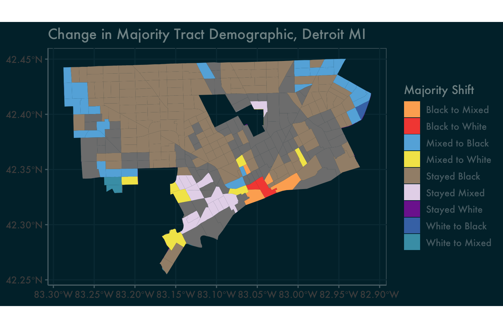

Has Detroit Become Gentrified in the Past Ten Years?
For this project in my statistics class, we were asked to argue two different positions using the same dataset — so I argued both that Detroit was gentrifying and that Detroit was not gentrifying. To do it, I took census data from 2000, 2010, and 2020 and compared a variety of different factors across those years: some factors pointed to no gentrification, and others pointed to gentrification.
I’ll leave you to draw your own conclusions about what is actually going on — the data is presented in two unique ways here, all from that one dataset. I made it into a spatial analysis problem, pulling census tracts from across Detroit to compare the city piece by piece.
This is an opinion piece I wrote for a class, rather than an academic paper.